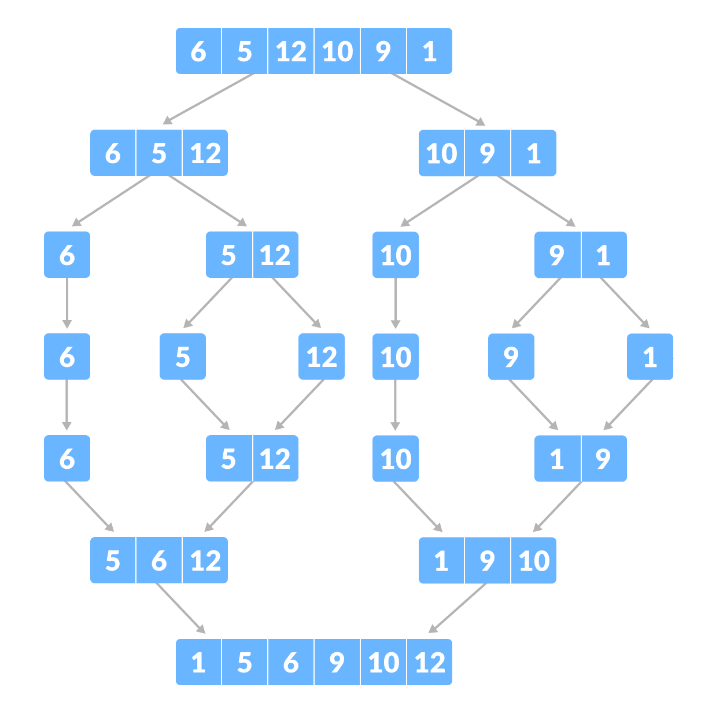
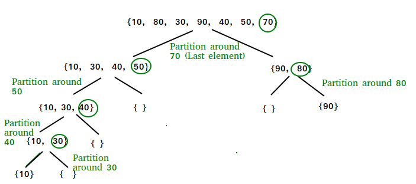
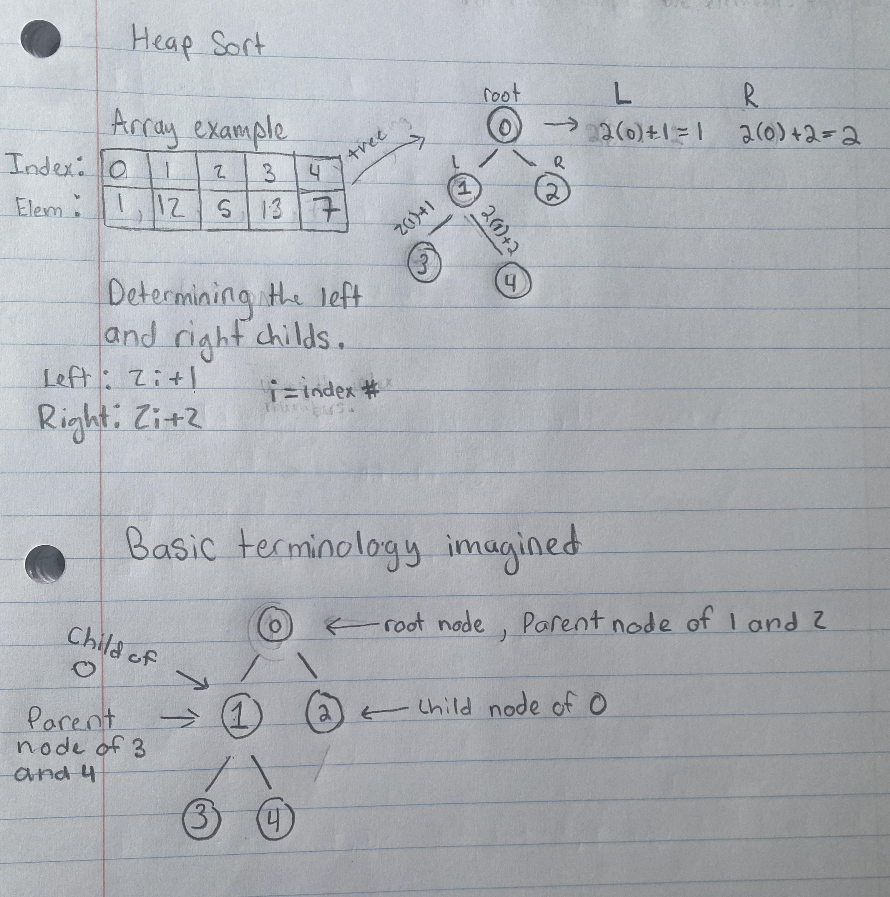
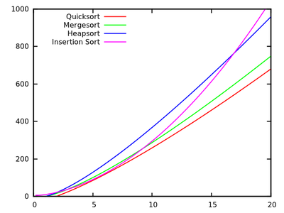

Merge Sort

The Merge Sort is a sorting algorithm that uses the principle of Divide and Conquer. Take a look to the left(the array). The first notable action being done is the array is being broken down into segments. The total elements in the array image is 6. It is broken in half(two sets of 3 elements) and then those halves are also broken in half(1 set of 1 element and a set of 2 elements for each half). Then the sets of two elements are broken down into 1. Essentially whats going on here is there is a segment of code, in a function, that breaks down the array and at the end continously re-calls(recurses) for both sides of the array after the first split. Then at the end it then takes another function which sorts the results of the recursion and after sorting it merges the elements into a array.Quicksort Process

Like the previous sort this sorting algorithm uses Divide and Conquer. The first step to this algorithm is to select a pivot. This can be any position in the array but to simplify this example uses the right most element in the array. The second step is using that pivot going through the array find an element that is greater than the pivot element. Set that element as a second pointer. Once that happens loop through the array again while comparing the pivot but this time find an element smaller. Once an element that is smaller has been found swap that element with the second pointer, NOT the pivot. This process is repeated, but it's important to realize that the second pointer is changing per repeated process. Once it reaches the condition of there being no element smaller than the second pointer it stops and swaps the pivot with the current second pointer. The third step is to have the entire array is split in half and the entire second step is repeated, do this using recursion. Continue to divide the smaller arrays.Heapsort Process

The Heapsort requires knowledge of trees. To understand it it involves imagining the elements of an array as a special tree known as Heap. Before creating the tree establishing what the term node is and how it relates to the tree is important. Nodes are just a way to a represent a value in a single data structure. There is also parent nodes and child nodes. For example node "A" is a parent of node "B", and the "B" is a child of the parent node "A". Finally theres the root node which is the first node of the tree. Typically the node bubbles of a tree are represented by the values of the indecies, but for this example they'll represent the index position itself. Looking at the binary tree to the left notice how the child elements are found. This is important in the actual programming of the algorithm as it helps create the tree. The formula's are simple and is labeled in the image as "determining the left and right childs", where the letter "i" is the index number. Note that 1 is the parent of 2 and 3 because 2(1)+1=3 and 2(1)+2=4, but why does 2 have no child nodes? This is because 2(2)+1=5 which is out of the array, so essentially any index after 2 has no child nodes. Keep examining the image until it makes sense, especially take note of the formulas being implemented to find the child nodes. The first thing to do is Heapify, a fancy way to say convert a binary tree to a heap structure. In this algorithm the heap strucutre uses Max Heap, a term to describe that parent elements will always be greater than their child elements. This results in the case that the root node will always be the greatest element of an array. The second step is to swap the root element with final node element and then remove the root element from the actual tree and place it in the array as the first element. The third step is repeating 1 and 2 until it is completely sorted.Time Complexity
Time complexity is the amount of time taken by an algorithm to complete what it's doing. Mathematicians have been able to do this using Big O Notation which examines how many operations a sorting algorithm takes to completely sort a large amount of data. It is effective, in that, it allows one to analyze and compare the efficiency of sorting algorithms relative to the size of data.
All sorts share the same average time complexity of O(n log(n)). Which means the sorts usually perform extremely well for large data sets. The worse time complexity for Mergesort and Heapsort are the same as their average but not Quicksort. Quicksort does extremely horrible coming in at a O(n^2). This is due a few reasons such as the array being sorted or a poor approach to selcting a pivot, but that can be fixed.
Space Complexity
Space complexity is the total space taken by an algorithm. Mergesort has a O(n), Quicksort has a O(logn), and Heapsort has a O(1). Comparing space complexities O(1) is way better in memory usage than O(n) and O(logn). In this case O(n) is way worse but despite these space complexities and Heapsort having the best, how is it slower than the other two?
Comparison of Sorting Algorithms

Earlier the Quicksort's worse speed was brought up but even then it's still faster thean the other two, how? It is true that they all have a similar average speed, however, plotted data says otherwise. Data from research shows quicksort having the upper hand and it was discovred that the implementation of the algorithm is why it is faster. Mergesort slows itself down because it has to allocate memory for a second array. Heapsorts main issue is the swapping, it may swap an element that's already in the proper position. Quicksort, however, tackles both of those issues well. If implemented properly, Quicksort reduces the amount of times it needs to access the memory compared to Mergesort which pays the price for that second array. Furthermore it doesn't swap elements that are already in the correct position as Heapsort does, causing it to do less steps. Those to issues that the other two sorts have, Quicksort approaches well. Heapsort is slower than Mergesort for the same reason it's slower than Quicksort, those extra steps prove inefficient toward the algorithm's timing as a whole. While it is true that Quicksort is in most cases faster, it may not always be the case. For example a Quicksort with a poor pivot choice can ultimately result in it being slower than the other two. That, however, wont happen often if the programmer knows to write good code. In the end due to Quicksorts efficient algorithm, it makes it the top sorting algorithm.